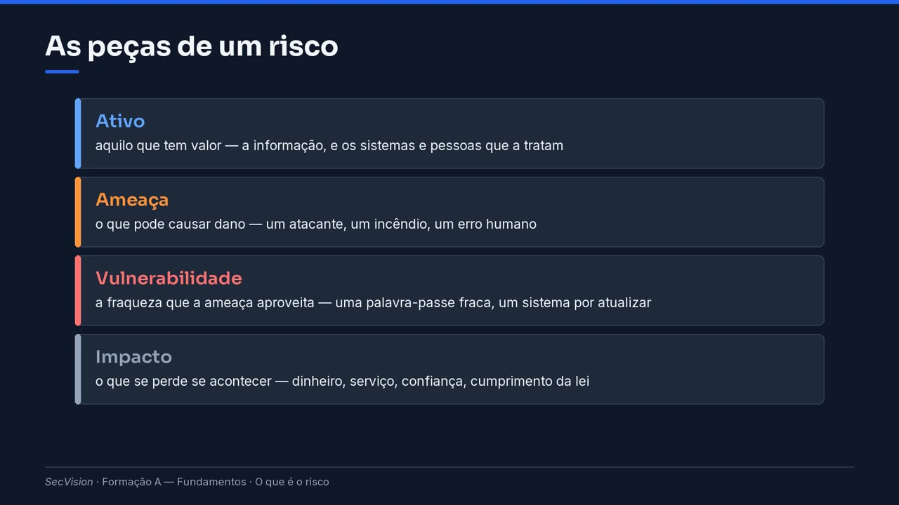

O que é o risco
Ameaça, vulnerabilidade, impacto e probabilidade; risco inerente e residual; o apetite pelo risco como decisão de gestão — e porque é que o risco nunca vai a zero.
Toda a lei de cibersegurança assenta numa palavra: risco. O decreto-lei obriga as entidades a gerir os riscos; as normas pedem uma apreciação de risco; o auditor vai perguntar pelo registo de riscos. Nesta página, explicamos o que a palavra quer dizer — devagar, e com um exemplo.
Vamos usar sempre a mesma organização, ao longo de toda a formação: o Instituto Politécnico de Vila Nova. É inventado, mas é parecido com muitos serviços públicos reais: mil e duzentas pessoas, estudantes, serviços académicos, um serviço de correio eletrónico, uma rede.
Uma sensação ou uma quantidade
Na conversa de todos os dias, risco é uma sensação. Dizemos que atravessar fora da passadeira é arriscado, e cada pessoa tem a sua opinião.
Na gestão da segurança da informação, risco é uma quantidade. Estima-se, compara-se, e decide-se sobre ela. E a regra de ouro é esta: duas pessoas diferentes, com os mesmos dados e os mesmos critérios, devem chegar ao mesmo valor. Se não chegam, os critérios não estão bem escritos.
No dia a dia, risco é uma sensação
Na conversa de todos os dias: «isto é arriscado» — uma impressão, que varia de pessoa para pessoa.
Na gestão da segurança: uma quantidade, que se estima, se compara e se decide.
Duas pessoas diferentes, com os mesmos dados, devem chegar ao mesmo valor.
As peças
Um risco tem sempre quatro peças. Primeiro, um ativo: algo que tem valor. Na segurança da informação, o ativo principal é a própria informação — e depois os sistemas e as pessoas que a tratam.
Segundo, uma ameaça: o que pode causar dano. Pode ser um atacante, mas também um incêndio, uma falha de energia, ou um simples erro de quem trabalha connosco.
Terceiro, uma vulnerabilidade: a fraqueza que a ameaça aproveita. Uma palavra-passe fraca, um servidor por atualizar, uma cópia de segurança que nunca foi testada. E quarto, o impacto: o que se perde se a coisa acontecer.
As três primeiras são necessárias ao mesmo tempo. Uma vulnerabilidade num computador desligado, sem dados, num armário, não gera risco relevante: falta o ativo com valor e falta o caminho para a ameaça chegar lá.
As peças de um risco
- Ativo
aquilo que tem valor — a informação, e os sistemas e pessoas que a tratam
- Ameaça
o que pode causar dano — um atacante, um incêndio, um erro humano
- Vulnerabilidade
a fraqueza que a ameaça aproveita — uma palavra-passe fraca, um sistema por atualizar
- Impacto
o que se perde se acontecer — dinheiro, serviço, confiança, cumprimento da lei

As peças de um risco.
Vejamos no Politécnico. O ativo é o correio eletrónico de toda a instituição, que guarda dados de estudantes e de pessoal. A ameaça é um ataque de ransomware: um programa malicioso que cifra os servidores e pede um resgate para os devolver.
A vulnerabilidade: as contas de correio não têm segundo fator de autenticação, e as cópias de segurança estão guardadas no mesmo servidor — o ataque cifra-as também. O impacto: uma semana sem correio, dados pessoais possivelmente expostos, e notificações obrigatórias à CNPD e ao CNCS.
No Politécnico de Vila Nova
Ativo: o correio eletrónico de toda a instituição, com os dados de estudantes e de pessoal.
Ameaça: um ataque de ransomware, que cifra os servidores e pede resgate.
Vulnerabilidade: contas sem segundo fator de autenticação, e cópias guardadas no mesmo servidor.
Impacto: uma semana sem correio, dados pessoais expostos, notificações à CNPD e ao CNCS.
Medir
Para comparar riscos, mede-se cada um com duas perguntas. Qual é a probabilidade de a ameaça explorar a vulnerabilidade? E qual seria o impacto? Cada resposta dá-se numa escala definida — por exemplo, de um a cinco — e o risco é o produto das duas.
O impacto avalia-se separadamente para as três propriedades da informação: confidencialidade, integridade e disponibilidade. Uma fuga de dados e uma paragem de serviço não têm o mesmo perfil. No Politécnico, o ransomware é grave nas três: os dados podem sair, podem ser alterados, e o serviço para.
Risco = probabilidade × impacto
Probabilidade: quão provável é que a ameaça explore a vulnerabilidade, numa escala definida (por exemplo, de 1 a 5).
Impacto: quão grave seria, na mesma escala — avaliado em confidencialidade, integridade e disponibilidade.
O produto dá um número que permite comparar riscos muito diferentes entre si.
Dica
Os níveis da escala e o que cada um quer dizer escrevem-se nos critérios de risco — Critérios de risco e catálogo de ameaças.
É assim que se costuma desenhar: uma matriz, com o impacto num eixo e a probabilidade no outro. Cada risco cai numa casa. Um risco de impacto muito grave e probabilidade quase certa é crítico; um de impacto insignificante e probabilidade rara é baixo.
Os limites — a partir de que valor um risco é alto — não vêm de nenhuma lei: são decisão de cada organização, e escrevem-se nos critérios de risco. Mas, uma vez escritos, aplicam-se a todos os riscos da mesma maneira.
Uma matriz de risco simples
Impacto ↓ · Probabilidade → |
1 Rara |
3 Possível |
5 Quase certa |
|---|---|---|---|
5 Muito grave |
5 · médio |
15 · alto |
25 · crítico |
3 Moderado |
3 · baixo |
9 · médio |
15 · alto |
1 Insignificante |
1 · baixo |
3 · baixo |
5 · médio |
Dica
Exemplo de ilustração. Os limites entre baixo, médio, alto e crítico são decisão de cada organização.
Inerente e residual
Há duas medidas do mesmo risco. O risco inerente é o que existiria se não houvesse controlo nenhum — um número teórico, que serve para comparar. O risco residual é o que sobra depois dos controlos que estão realmente a funcionar. É o residual que interessa às decisões.
No Politécnico, se se ativar o segundo fator em todas as contas e as cópias passarem para um sítio separado e testado, a probabilidade de o ransomware ter sucesso desce muito. O risco inerente continua alto; o residual passa a médio ou baixo.
E depois há o apetite pelo risco: quanto risco residual a organização aceita, de forma consciente. Isto não é uma decisão técnica — é da direção. A informática diz quanto custa baixar um risco; a direção decide se paga, ou se aceita o que sobra, e assina essa decisão.
Inerente, residual, e o que se aceita
Risco inerente: o que existiria sem controlo nenhum. Serve para comparar.
Risco residual: o que sobra depois dos controlos que estão realmente implementados. É este que decide.
Apetite pelo risco: quanto risco residual a organização aceita, conscientemente. É uma decisão de gestão.
Um aviso que quase nenhum manual dá: o risco nunca vai a zero. E tentar pô-lo a zero é má gestão, porque se gasta num risco pequeno o dinheiro que faltava para um grande.
Por isso, a pergunta certa nunca é «estamos seguros?». É: «que riscos aceitámos, e sabemo-lo?». Um risco aceite tem um dono, uma data e uma justificação escrita. Um risco de que ninguém se lembrou não está aceite — está apenas por gerir.
Importante
O risco nunca vai a zero
Tentar pôr um risco a zero é má gestão: gasta-se num risco pequeno o que faltava para um grande.
A pergunta certa não é «estamos seguros?», mas «que riscos aceitámos — e sabemo-lo?»
Um risco aceite tem dono, data e justificação escrita. Um risco ignorado não é um risco aceite.
Na sua organização
Para começar a trabalhar o risco na sua organização, há informação que tem de pedir a pessoas diferentes. À direção, o apetite pelo risco e quem tem autoridade para aceitar o quê. Aos responsáveis de cada serviço, que informação é crítica e quanto custa perdê-la durante um dia.
À informática, as vulnerabilidades que se conhecem e — com honestidade — os controlos que estão mesmo a funcionar, não os que estão no papel. E ao encarregado de proteção de dados, onde há dados pessoais e de que tipo. Ninguém tem a resposta toda sozinho.
O que pedir a quem
À direção: o apetite pelo risco, e quem decide aceitar o quê.
Aos responsáveis de cada serviço: que informação e que sistemas são críticos, e o que custa perdê-los um dia.
À informática: as vulnerabilidades conhecidas e os controlos que estão mesmo a funcionar.
Ao encarregado de proteção de dados: onde há dados pessoais, e de que categorias.
Na plataforma, tudo isto tem lugar. Os critérios e o apetite escrevem-se em Critérios e apetite. Cada risco vai para o Registo de risco, com o ativo, a ameaça, a probabilidade e o impacto nas três propriedades. Vamos fazê-lo, ecrã a ecrã, nas páginas do módulo da plataforma.
E a plataforma não guarda o risco inerente como um número escrito à mão: calcula-o sempre a partir da probabilidade e do impacto. Assim, ninguém o pode alterar sem alterar também o que o justifica.
Onde isto entra na plataforma
Os critérios e o apetite escrevem-se em Identificar › Risco › Critérios e apetite (Critérios de risco e catálogo de ameaças).
Cada risco, com ativo, ameaça, probabilidade e impacto C/I/A, vai para o Registo de risco (O registo de risco).
O inerente calcula-se sozinho, e o residual sai dos controlos ligados ao risco.